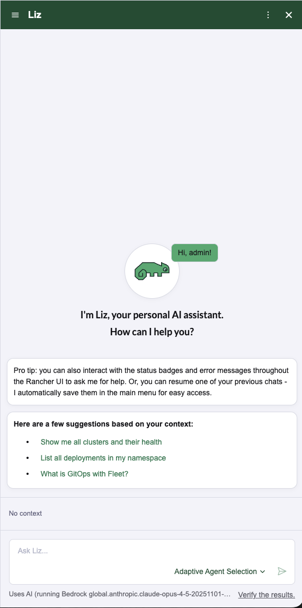
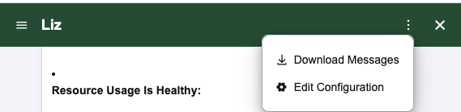

|
本文档采用自动化机器翻译技术翻译。 尽管我们力求提供准确的译文，但不对翻译内容的完整性、准确性或可靠性作出任何保证。 若出现任何内容不一致情况，请以原始 英文 版本为准，且原始英文版本为权威文本。 |
与 Liz（AI 助手）互动
开始使用 Liz
Liz 包含一个名为 Liz 的持久 AI 助手。您可以随时通过点击 UI 中的 Liz 图标  来打开助手。
来打开助手。
当您打开侧窗格时，Liz 会根据您当前页面的上下文向您问好并提供建议。在对话中，Liz 提供：
-
两个建议的操作 以继续当前工作流程。
-
一个探索性操作 以了解更多相关主题。

上下文感知
Liz 确切地知道您正在查看什么。任何带有状态徽章的资源都有一个 询问 Liz 按钮。
-
点击资源旁边的 询问 Liz 滑动按钮 图标。

-
侧边面板将自动打开，并为该特定资源生成一个量身定制的提示。
-
Liz 会自动收集资源名称、集群 ID 和名称空间，以提供准确的帮助。


管理对话
您可以维护多个线程或保存历史记录以供后续参考。
-
创建新聊天:要开始一个新的会话，请点击新聊天图标。

-
下载历史记录:要保存对话记录，请点击下载图标。这将把记录保存为`.txt`文件到您的本地驱动器。

切换代理
默认情况下，Liz使用“智能路由”将您的请求发送给最佳专门代理（例如，针对漏洞的安全代理）。
如果您想手动与特定代理交谈：
-
点击代理选择图标。

-
从列表中选择所需的代理。
| 如果Liz注意到您经常使用同一代理，它可能会建议在该会话中切换到手动模式。 |
示例提示尝试
不知从何处着手？试着问Liz这些问题：
| 类别 | 用户提示 | 处理代理 |
|---|---|---|
安全性 |
"我的哪些运行工作负载受到漏洞影响？" |
安全代理（获取CVE和扫描数据） |
库存 |
"列出我所有集群中使用的所有注册表。" |
Rancher代理（查询集群范围内的资源） |
容量 |
"给我显示消耗最多内存的前5个Pod。" |
Rancher代理（查询资源使用数据） |
导航 |
"这个状态是什么意思？" |
上下文逻辑（从UI解释资源状态） |
查错 |
"应用程序运行缓慢；找出根本原因。" |
SUSE Observability 代理（分析指标和日志） |
技能提升 |
"我如何在Rancher中安装helm图表？" |
知识（提供文档来源） |
置备 |
"分析集群并排查任何问题。" |
Rancher-Provisioning Agent（检查基础设施健康） |